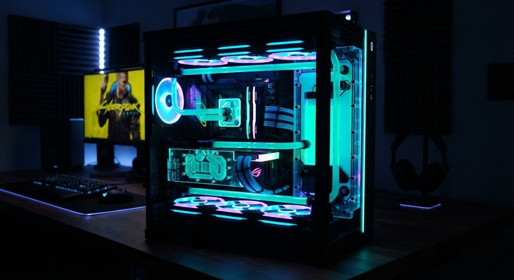
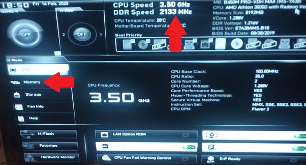

Pushing Silicon to the Absolute Limit.
For elite gamers, 3D renderers, and extreme overclockers, factory limits are merely a starting point. Lapoworld's gaming division is dedicated to stripping away thermal bottlenecks, tightening memory latencies, and engineering custom rigs that dominate the 1% low frame-time metrics.
1. The Art of RAM Timing Optimization
Buying high-speed DDR4 or DDR5 RAM and simply enabling the XMP or EXPO profile in the BIOS leaves a massive amount of performance on the table. Motherboard manufacturers play it safe with XMP profiles, utilizing loose secondary and tertiary sub-timings (like tFAW, tRFC, and tREFI) to ensure universal compatibility. However, in CPU-bound scenarios and high-refresh-rate gaming, these loose timings cause micro-stutters and drastically lower your 1% low frame rates.
Lapoworld technicians manually tune memory architectures. We test the specific silicon die (Samsung B-Die, Hynix CJR/DJR, or Micron Rev. E) and push the voltage safely while aggressively tightening the sub-timings. By minimizing the time the memory controller waits for the RAM to refresh (tREFI) and reducing the window required for activation commands (tFAW), we significantly decrease input latency. This optimization translates to butter-smooth camera pans in competitive shooters and eliminates the jarring frame drops often experienced in heavily modded open-world titles.
2. Advanced Thermal Interfaces: Liquid Metal & Delidding
Modern flagship CPUs pull over 250 watts of power, creating an immense thermal density problem. The standard thermal paste used between the silicon die and the IHS (Integrated Heat Spreader) acts as an insulator at extreme temperatures. When a CPU hits 95°C, it automatically downclocks (thermal throttles) to save itself, costing you frames.
For absolute maximum performance, Lapoworld offers CPU delidding and Liquid Metal application. We physically remove the metal heat spreader from the CPU using specialized, safe mechanical tools. We then clean the factory paste and apply a Gallium-based Liquid Metal (which boasts a thermal conductivity rating of 73 W/mK compared to standard paste's 8 W/mK) directly onto the bare silicon die. We then re-seal the IHS. This extreme procedure can drop load temperatures by an astonishing 15°C to 20°C, allowing your processor to sustain its maximum turbo boost clocks indefinitely.

3. Custom Loop Water-Cooling (PETG & Acrylic)
All-in-One (AIO) liquid coolers are great, but they cannot compete with the thermal mass and flow rate of a dedicated custom loop. If you are running a high-tier RTX GPU and an i9/Ryzen 9 processor, combining them into a single, high-flow custom water loop is the pinnacle of PC engineering.
Lapoworld designs and bends custom hardline tubing (PETG or Acrylic) to perfectly match your chassis aesthetics. We integrate high-static-pressure fans, massive copper radiators, and D5 pumps to create a silent, thermally impenetrable fortress. Furthermore, we install active backplate cooling and replace the stock thermal pads on your GPU's GDDR6X VRAM—which notoriously overheat—dropping memory junction temperatures by up to 25 degrees, entirely unlocking your graphics card's overclocking headroom.
4. Software Modding & Game Engine Stability
Hardware is only half the battle; software architecture dictates how that hardware is utilized. High-end PC gamers frequently push game engines beyond their original scope using complex mod loaders, ENB series graphical injectors, and script extenders.
Lapoworld provides deep software troubleshooting for enthusiast setups. Whether you are experiencing memory leak crashes after injecting 4K texture packs into *Resident Evil 4*, or script-latency freezing in heavily modded *Spider-Man* and *Skyrim* setups, we analyze the load orders. We allocate proper page-file distributions, bypass hardcoded RAM limits on older executables using 4GB patches, and optimize the Windows registry to prioritize game-thread execution over background telemetry. We ensure your software is as finely tuned as your hardware.

What The Enthusiasts Say
Kolkata's most demanding gamers and creators trust Lapoworld to build and maintain their battle stations.